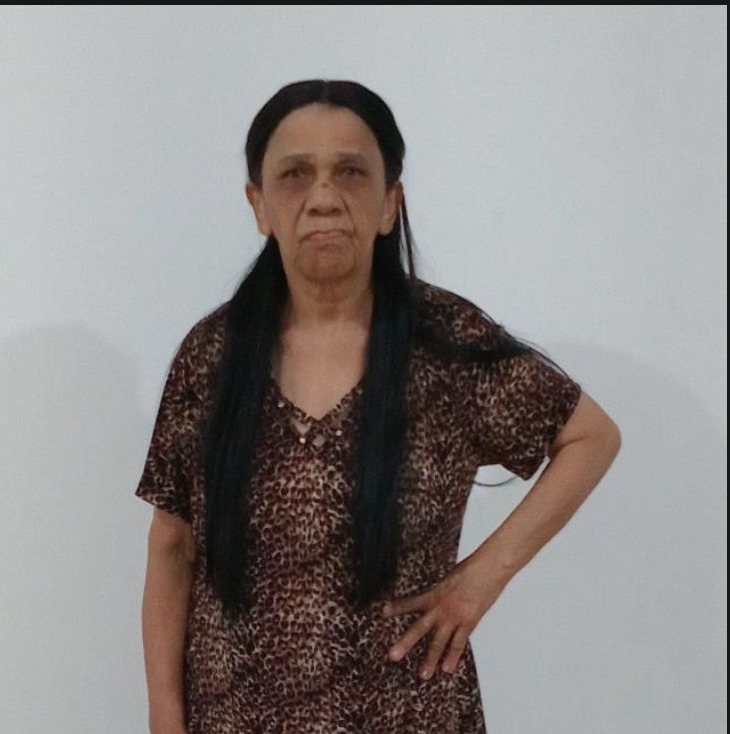
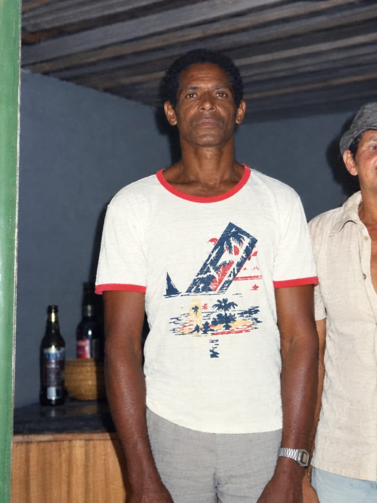
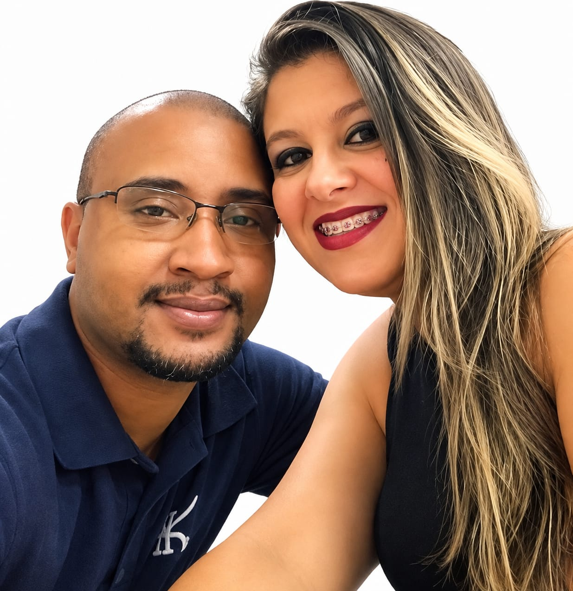

Origem e Infância
Nasceu em 22 de outubro de 1983, na cidade de Brejo Grande-Sergipe.
Nascido de uma família simples, formada por 9 irmãos. Chegou na cidade de São Paulo aos 2 anos de idade.
Em 1984, Foi Batizado na Igreja Católica na Paróquia Nossa Senhora da Conceição na sua cidade natal, realizou a primeira Comunhão e Crisma aos 22 anos em São Paulo.
Filiação

Marilene Dos Santos

Manoel José Dos Santos (Falecido)
Gostos e Infância
Desde pequeno apreciava livros e músicas. Quando chegava da escola gostava de passar a maior parte do dia assistindo a programas de tv como chaves, desenhos e seriados Japoneses como Jaspion, Changeman,Black kamen Ryder entre outros.
Não tinha muitos amigos, gostava de brincar muitas vezes sozinho inventando suas próprias estórias.
Desde muito jovem descobriu que gostava de equipamentos eletrônicos, o mundo de Tecnologia o fascinava.
Trajetória Profissional
Aos 19 anos teve seu primeiro emprego registrado num restaurante Fastfood chamado McDonalds onde trabalhou por pelo menos 3 meses, posteriormente trabalhou em alguns serviços temporário até decidir fazer um curso de Vigilante para trabalhar na área da segurança Patrimonial.
Em 2007, entrou na Área da Segurança Patrimonial numa empresa chamada GSV Segurança e após 16 anos atuando nessa área, em 2023 decidiu encerrar o ciclo. Em 21 de Agosto de 2023 é Admitido como OTU(Operador de Terminal Urbano) pela SPS VIVACIDADE.
Vida Pessoal e Família
Aos 29 anos de idade, casou no regime Civil em 06/12/2012 e dois dias depois aconteceu o casamento religioso em 08/12/2012. Divorciou em 23/07/2014 não tendo filhos. Em 1 Abril de 2014, casou-se com Flaviana Mendonça e com ela teve um filho.

Essa é minha linda Esposa, sou grato por tê-la em minha vida. Ela me ajudou muito durante a minha trajetória de vida.
Este é meu Filho amado, Lucas Mendonça, uma benção na minha vida!